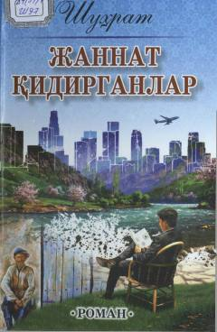

JQMansab va sevgi o'rtasida qolgan yigitning hayot sinovlari haqida roman.
Shuhratning 'Jannat qidirganlar' romani o'zbek jamiyatidagi mansabparastlik, sevgi va hayot tanlovi mavzularini yoritadi. Asosiy qahramon Aʼzam o'z manfaati uchun to'g'ri yo'ldoshni izlab, turli muammolarga duch keladi. Roman 2018-yilda Gʻafur Gʻulom nomidagi nashriyot-matbaa ijodiy uyi tomonidan nashr etilgan.